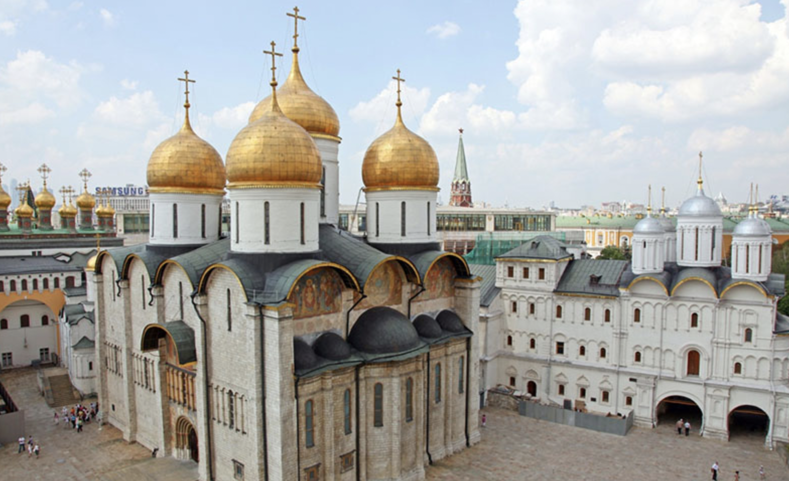

In Day of the Oprichnik, Vladimir Sorokin uses the Uspenskii Cathedral as a deliberately charged symbolic setting rather than a neutral backdrop. The cathedral—historically the sacred site of coronations for Russian tsars—becomes a stage where religion, state power, and violence are fused in unsettling ways.
Sorokin reimagines the cathedral as a space where ritual and brutality coexist seamlessly. The oprichniki, who present themselves as loyal servants of the sovereign, participate in quasi-religious ceremonies that echo Orthodox liturgy. However, these rituals are stripped of genuine spirituality and instead function as performances of ideological loyalty. By placing such scenes inside the Uspenskii Cathedral, Sorokin suggests that the sacred has been hollowed out and repurposed to legitimize authoritarian rule.